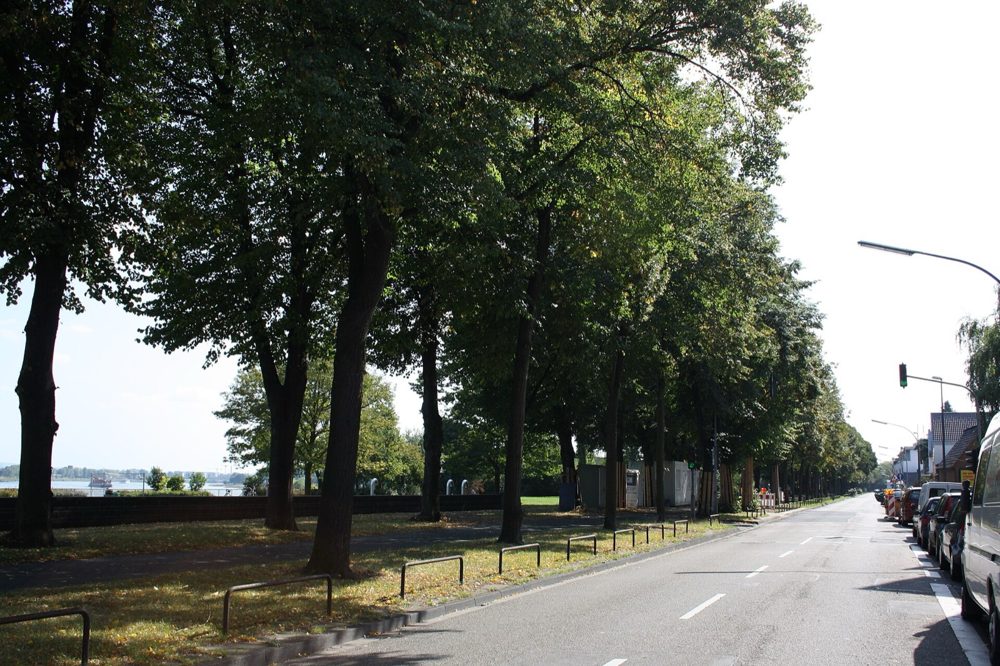
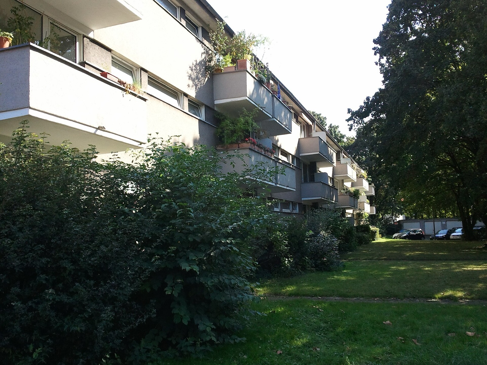
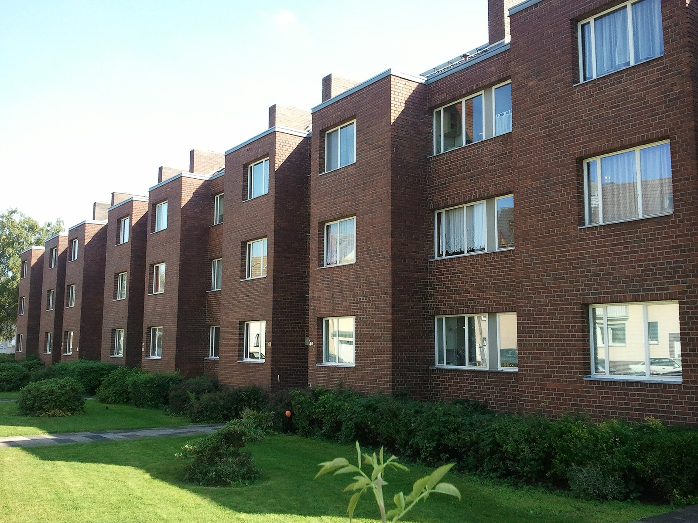

Immobilienmakler Köln-NiehlVier Wohnungen, vier Preiseund keiner davon war der Durchschnitt.
Ich habe in Niehl vier Eigentumswohnungen vermittelt, drei davon 2025. Sie lagen zwischen 4.083 und 5.978 Euro je Quadratmeter. Der amtliche Durchschnitt liegt bei 3.949 Euro. Was diesen Abstand erklärt, entscheidet auch über den Preis Ihrer Immobilie.
Was könnte Ihre Immobilie in Köln-Niehl erzielen?
In sechs Schritten zu einer realistischen Einschätzung. Kostenlos, unverbindlich und ohne Vertrag. Womit fangen wir an?
Andere Objektart wählenVier Verkäufe, die kein Durchschnitt erklärt
Ich habe in Köln-Niehl vier Eigentumswohnungen vermittelt, drei davon im Jahr 2025. Sie sind der Grund, warum ich eine Immobilie hier nicht einfach mit einem durchschnittlichen Quadratmeterpreis multipliziere.
| Objekt | Wohnfläche | Verkaufspreis | je m² | Vermarktung |
|---|---|---|---|---|
| Friedrich-Karl-Straße, 12/2025 | 45 m² | 269.000 € | 5.978 € | rund 3 Wochen |
| Niehler Straße, 10/2025 | 68 m² | 350.000 € | 5.147 € | rund 8 Wochen |
| Nesselrodestraße, 06/2025 | 96 m² | 520.000 € | 5.417 € | rund 5 Monate |
| Em Parkveedel, 2017 | 120 m² | 490.000 € | 4.083 € | rund 3 Monate |
Eigene Verkaufserfahrung von Highseller Immobilien & Finanzen. Der Verkauf von 2017 ist wegen des zeitlichen Abstands ausdrücklich kein heutiger Vergleichspreis.
Zwischen den drei Verkäufen aus 2025 liegen 831 Euro je Quadratmeter. Die kleinste Wohnung erzielte dabei den höchsten Quadratmeterpreis, die größte den niedrigsten — der Zusammenhang mit der Fläche ist also nicht der, den man erwartet.
Blaue Punkte: eigene Verkäufe 2025. Grauer Punkt: Verkauf von 2017, kein heutiger Vergleichspreis. Gestrichelt: der Durchschnitt aus 75 Weiterverkäufen laut Grundstücksmarktbericht 2026.
Was der Abstand zum Durchschnitt bedeutet — und was nicht
Die drei Verkäufe aus 2025 liegen 30 bis 51 Prozent über dem amtlichen Durchschnitt. Daraus ließe sich ein Werbeversprechen machen. Ich halte das für unredlich, weil es die Zahl falsch liest.
Der Durchschnitt von 3.949 Euro stammt aus 75 Verkäufen und umfasst alles: die kleine unmodernisierte Bestandswohnung ebenso wie die gepflegte Anlage mit Aufzug. Meine drei Wohnungen hatten Loggia, Einbauküche, hochwertiges Bad, in einem Fall zwei Terrassen, zwei Bäder und einen Tiefgaragenstellplatz. Sie gehören in die obere Hälfte dieses Marktes, nicht in seine Mitte.
Genau das ist der Punkt: Käufer kaufen keine durchschnittlichen Quadratmeter. Sie entscheiden sich für eine konkrete Wohnung, in einem konkreten Haus, mit konkreter Ausstattung. Der Durchschnitt beschreibt den Markt — Ihre Immobilie bestimmt ihre Position darin.
Was die drei Verkäufe voneinander unterscheidet
- Friedrich-Karl-Straße · 45 m² · 269.000 € · 3 Wochen
- Eine 1,5-Zimmer-Wohnung mit Loggia. Vor dem Verkaufsstart habe ich dem Eigentümer geraten, frisch streichen zu lassen, und parallel innerhalb einer Woche die Unterlagen beschafft: bemaßter Grundriss, Wohnflächenberechnung, Energieausweis, aktueller Grundbuchauszug, Flurkarte. In der Vermarktung standen das hochwertige Bad, die Einbauküche und die Loggia im Mittelpunkt. Nach drei Wochen verkauft. Ein Verkauf beginnt nicht mit dem Inserat, sondern mit der Vorbereitung.
- Niehler Straße · 68 m² · 350.000 € · 8 Wochen
- Drei Zimmer mit Loggia. Das Hausgeld war höher und der Gebäudezustand weniger attraktiv als bei der ersten Wohnung — solche Unterschiede nimmt ein Käufer wahr. Gekauft hat eine dreiköpfige Familie mit Hund, für die die Nähe zum Nordpark ein konkreter Vorteil war. Die Wohnung allein bestimmt die Nachfrage nicht; Gebäude, laufende Kosten und Umfeld gehören dazu.
- Nesselrodestraße · 96 m² · 520.000 € · 5 Monate
- Drei Zimmer mit zwei Terrassen, zwei Bädern, hochwertiger Einbauküche und Tiefgaragenstellplatz. Durch die Bauweise wirkte die Wohnung eher wie ein Haus als wie eine Etagenwohnung. Gekauft hat ein junger Investor, der zunächst vermieten und später selbst einziehen wollte. Fünf Monate Vermarktung. Nicht möglichst viele Interessenten sind das Ziel, sondern die wenigen, zu denen die Immobilie wirklich passt.

Was 2025 in Niehl tatsächlich verkauft wurde
Eigene Verkaufserfahrung ist die eine Hälfte. Die andere ist der Blick auf den gesamten Markt — und zwar auf beurkundete Kaufverträge, nicht auf Angebotspreise. Der Grundstücksmarktbericht 2026 wertet die Verkäufe des Jahres 2025 aus.
| Immobilienart | Verkäufe | Ø Kaufpreis | Ø Wohnfläche | Ø je m² |
|---|---|---|---|---|
| Eigentumswohnung, Neubau | 15 | 518.607 € | 73 m² | 7.006 € |
| Reihenmittelhaus | 7 | 445.864 € | 109 m² | 4.357 € |
| Doppelhaushälfte, Reihenendhaus | 4 | 609.013 € | 142 m² | 4.283 € |
| Eigentumswohnung, Weiterverkauf | 75 | 278.291 € | 70 m² | 3.949 € |
Gutachterausschuss für Grundstückswerte in der Stadt Köln, Grundstücksmarktbericht 2026, Berichtsjahr 2025.
Mit 75 Verkäufen ist der Bestandsmarkt für Eigentumswohnungen das mit Abstand belastbarste Segment. Alles andere beruht auf vier bis fünfzehn Verkäufen — brauchbar zur Orientierung, aber empfindlich gegenüber einzelnen Ausreißern.
Auch der Bodenrichtwert gehört zur Einordnung, vor allem bei Häusern und Grundstücken. Für die ausgewerteten Wohnbauland-Richtwertzonen in Niehl ergibt sich zum 1. Januar 2026 ein Median von rund 1.180 Euro je Quadratmeter. Er ist ein Ausgangspunkt, kein Preisschild: Lage, Nutzung, Erschließung und Zuschnitt führen zu Zu- oder Abschlägen.
3.057 Euro Unterschied — der größte Neubau-Abstand, den ich kenne
Zwischen einer Bestandswohnung und einem Neubau liegen in Niehl 3.057 Euro je Quadratmeter. Das sind 77 Prozent. Zum Vergleich: In Rodenkirchen sind es 61 Prozent, in Sürth 35.
Für Eigentümer einer Bestandswohnung hat das zwei Seiten. Die unerfreuliche: Ein Neubau in der Nachbarschaft ist kein Vergleichsobjekt, auch wenn er ähnlich groß ist. Die erfreuliche: Wer eine gut ausgestattete, modernisierte Bestandswohnung verkauft, steht einem Neubaupreis gegenüber, der für viele Käufer schlicht außerhalb der Reichweite liegt. Der Abstand schafft Raum nach oben — vorausgesetzt, die Wohnung kann ihn begründen.
Genau dort lagen meine drei Verkäufe: zwischen dem Bestandsdurchschnitt und dem Neubauniveau, näher am Bestand, aber deutlich darüber.

Häuser in Niehl: der Unterschied liegt in der Größe
Für Häuser ist die Datenlage dünn — vier Doppelhaushälften und Reihenendhäuser, sieben Reihenmittelhäuser. Bemerkenswert ist trotzdem, wie nah die Quadratmeterpreise beieinanderliegen: 4.283 gegenüber 4.357 Euro. Der Preisunterschied von 163.000 Euro zwischen beiden Bauformen kommt fast vollständig aus der Wohnfläche, nämlich 142 gegenüber 109 Quadratmetern.
Interessant ist der Vergleich zur Wohnung: Meine drei Wohnungsverkäufe lagen je Quadratmeter über beiden Haustypen. Gut ausgestattete Wohnfläche ist in Niehl also nicht automatisch billiger als Hausfläche — ein Zusammenhang, den man in Stadtteilen mit teurem Boden selten findet.
Beim Hausverkauf treten dafür andere Fragen in den Vordergrund. Grundstückszuschnitt, Privatsphäre, Ausrichtung der Terrasse, Zufahrt und Stellplätze wirken oft stärker als die reine Grundstücksgröße — ein kleinerer, geschützter Garten kann für eine Familie mehr wert sein als eine größere, einsehbare Fläche. Dazu kommen Gebäudesubstanz, energetischer Zustand und die Frage, welche Investitionen nach dem Kauf anstehen.
Bei ausgebauten Dachgeschossen, Gauben oder hergerichteten Kellern kläre ich vorab, was genehmigt ist, was als Wohnfläche zählt und was Nutzfläche bleibt. Ein hochwertig ausgebauter Keller kann für einen Käufer sehr wertvoll sein — zur Wohnfläche wird er durch seine Nutzung trotzdem nicht.
Was Käufer und Banken prüfen, bevor sie unterschreiben
Ein hochwertiges Bad, eine moderne Küche oder eine schöne Loggia verbessern den ersten Eindruck. Sobald das Interesse konkret wird, schaut ein gut vorbereiteter Käufer aber weiter — denn er erwirbt mit der Wohnung zugleich einen Anteil am Gemeinschaftseigentum.
- Das Gebäude
- Wie stehen Dach, Fassade, Fenster und Heizung da? Welche Modernisierungen sind erfolgt? Welche größeren Maßnahmen werden in der Eigentümergemeinschaft diskutiert oder sind beschlossen? Eine hervorragend modernisierte Wohnung verliert an Wert, wenn direkt nach dem Kauf Kosten am Gebäude anstehen.
- Das Hausgeld
- Nicht die Höhe entscheidet, sondern die Zusammensetzung: Welche laufenden Kosten sind enthalten, welcher Anteil ist nicht umlagefähig, wie hoch ist die Zuführung zur Erhaltungsrücklage, gibt es außergewöhnliche Belastungen? Der Käufer kalkuliert seine monatliche Gesamtbelastung, nicht nur den Kaufpreis.
- Die Rücklage
- Auch ihre Höhe allein sagt wenig. Sie muss zum Zustand des Gebäudes passen. Reicht sie, oder droht nach dem Kauf eine Sonderumlage? Dafür sehe ich mir Wirtschaftsplan, Jahresabrechnungen und Protokolle der Eigentümerversammlungen an.
- Die Teilungserklärung
- Bei Gartenflächen, Terrassen, Stellplätzen und Kellerräumen: Sondereigentum, Sondernutzungsrecht oder Gemeinschaftseigentum? Diese Frage sollte beantwortet sein, bevor sie in der Vertragsvorbereitung gestellt wird.
Ungeklärte Fragen verschwinden nicht von selbst. Tauchen sie während der Käuferfinanzierung auf, entstehen Verzögerungen — im ungünstigen Fall Nachverhandlungen oder ein Absprung. Probleme lieber vor dem Verkaufsstart erkennen, als sie vom Käufer oder seiner Bank entdecken zu lassen.
Warum wenige hundert Meter in Niehl den Unterschied machen
Ein Durchschnittspreis beschreibt den Markt. Er beschreibt nicht Ihre Lage. Mit Mikrolage meine ich das unmittelbare Umfeld: Verkehr, Ruhe, Privatsphäre, Grün, Versorgung, tägliche Wege — und die tatsächliche Position der Wohnung oder des Hauses darin.
- Rhein und Niehler Damm
- Für Käufer, die spazieren gehen, Rad fahren oder nach Feierabend ans Wasser wollen, ist die Erreichbarkeit ein konkreter Vorteil — für einen Hundebesitzer wiegt sie schwerer als für andere. Im Exposé würde ich deshalb nicht „Der Rhein ist in der Nähe" schreiben, sondern was diese Nähe im Alltag ändert.
- Nordpark
- Für Familien und Menschen, die viel draußen sind, praktisch; für andere Käufer nebensächlich. Bei einem meiner Verkäufe war genau das der Punkt: Die Familie mit Hund, die die Wohnung an der Niehler Straße kaufte, hat den Park als Vorteil gewertet.
- Anbindung A1, A57 und Kreuz Köln-Nord
- Für Pendler ein echter Standortvorteil. Gleichzeitig bewerten lärmempfindliche Käufer die unmittelbare Nähe zu stärkerem Verkehr anders. Entscheidend ist nicht die kürzeste Entfernung, sondern das Verhältnis von Erreichbarkeit und Wohnruhe.
- Arbeitgeber im Kölner Norden
- Die Ford-Werke sind ein bedeutender Arbeitsplatz, dazu kommen weitere Unternehmen entlang der großen Achsen, etwa der Bundesanzeiger Verlag an der Amsterdamer Straße. Für Käufer mit Arbeitsplatz im Norden wird aus „guter Verkehrsanbindung" ein praktischer Alltagsvorteil.
- Versorgung im Alltag
- Lidl, Aldi, der OBI an der Niehler Straße und der Wochenmarkt an der Waldfriedstraße gehören dazu. Eine lange Geschäfteliste im Exposé hilft trotzdem niemandem — für einen Hauseigentümer, der renoviert, ist die Nähe zum Baumarkt relevanter als für den Käufer einer kleinen Wohnung.
Und selbst dieselbe Straße hat verschiedene Mikrolagen. Eine Immobilie liegt an der Kreuzung, eine andere zurückgesetzt. Ein Haus hat einen geschützten Garten, ein anderes ist einsehbar. Bei Wohnungen verändern Etage, Blickrichtung und Ausrichtung von Balkon oder Terrasse die Wahrnehmung zusätzlich. Deshalb reicht mir für eine Bewertung nicht die Aussage „Meine Wohnung liegt in der Friedrich-Karl-Straße" — sondern die Frage, wie sie dort genau liegt.
Niehl in Zahlen
Marktdaten Köln-Niehl
- Bodenrichtwert
- 1.000–1.350 €/m²Median 1.180 · 5 Zonen · Stichtag 1.1.2026
- Wohnung, Weiterverkauf
- 3.949 €/m²75 Kaufverträge 2025
- Wohnung, Neubau
- 7.006 €/m²15 Kaufverträge 2025
Amtliche Werte — Quellen und Methodik.
Bebauung in Köln-Niehl
Vom Fischerdorf zum Industrievorort gewachsen. Die Wohnbebauung liegt im Süden und Westen und schließt nahtlos an die Nachbarstadtteile an, im Norden dominiert Großindustrie.
Lage und Infrastruktur
Stadtbahn 12, 13 und 16, Bus 124 und 147. Erich-Kästner-Gymnasium und zwei Grundschulen. Die Ford-Werke sind seit 1929 hier ansässig, Niehl I ist der größte Kölner Rheinhafen. Alt St. Katharina von 1260 mit romanischem Westturm.
Zahlen zum Wohnen
Köln-Niehl zählt 10.248 Wohnungen, im Schnitt 74 m² groß und damit nah am Kölner Mittel von 77 m². Der Zuschnitt bleibt knapp unter dem städtischen Wert, und weil sich der Bestand nicht auf Extreme verteilt, sind Vergleichsobjekte aus dem Veedel belastbar. Der Bestand wächst kaum: 41 Wohnungen wurden 2025 fertiggestellt, das entspricht 0,4 % des Bestands. Die Förderquote liegt bei 7,8 %, stadtweit bei 6,2 %. Damit liegt der geförderte Bestand über dem Stadtwert; spürbar wird das in einzelnen Straßenzügen, nicht im Veedel insgesamt. Stadt Köln, Statistischer Datenkatalog 2025.
Alle genannten Werte ordnen ein, sie ersetzen keine Bewertung. Den Wert Ihres Objekts ermitteln wir kostenlos und unverbindlich, auf Wunsch bei einem Termin bei Ihnen.
Die wichtigsten Fragen vor dem Verkauf in Niehl
Der amtliche Durchschnitt aus 75 Weiterverkäufen des Jahres 2025 liegt bei 3.949 Euro je Quadratmeter, bei einer mittleren Wohnfläche von 70 Quadratmetern und einem mittleren Kaufpreis von 278.291 Euro. Meine eigenen drei Verkäufe von 2025 lagen zwischen 5.147 und 5.978 Euro — sie hatten Loggia, Einbauküche und gehobene Ausstattung. Wo Ihre Wohnung innerhalb dieser Bandbreite liegt, entscheidet sich an Zustand, Etage, Balkon, Stellplatz, Hausgeld und Gebäudezustand.
Weil der Durchschnitt aus 75 Verkäufen alles umfasst — von der kleinen unmodernisierten Bestandswohnung bis zur gepflegten Anlage. Meine Wohnungen gehörten in die obere Hälfte dieses Marktes. Das ist kein Versprechen, dass sich für jede Wohnung 5.900 Euro erzielen lassen, sondern der Beleg dafür, dass ein Durchschnitt über eine konkrete Immobilie wenig aussagt.
Bei 15 ausgewerteten Neubauverkäufen lag der Durchschnitt 2025 bei 518.607 Euro und 7.006 Euro je Quadratmeter. Das sind 77 Prozent mehr als im Bestand — absolut 3.057 Euro je Quadratmeter. Dieser Abstand ist der größte, den ich in den Kölner Stadtteilen finde, an denen ich arbeite.
Für Doppelhaushälften und Reihenendhäuser weist der Grundstücksmarktbericht vier Verkäufe mit durchschnittlich 609.013 Euro aus, bei 142 Quadratmetern Wohnfläche. Für Reihenmittelhäuser sieben Verkäufe mit 445.864 Euro bei 109 Quadratmetern. Je Quadratmeter liegen beide fast gleichauf, bei 4.283 und 4.357 Euro — der Preisunterschied kommt fast vollständig aus der Größe. Vier beziehungsweise sieben Verkäufe sind allerdings eine schmale Grundlage.
Für die ausgewerteten Wohnbauland-Richtwertzonen ergibt sich zum 1. Januar 2026 ein Median von rund 1.180 Euro je Quadratmeter. Entscheidend bleibt die konkrete Richtwertzone Ihres Grundstücks; Lage, Zuschnitt, Erschließung und Nutzung können zu Zu- oder Abschlägen führen.
Auf das Gebäude, nicht nur auf die Wohnung. Ein Käufer erwirbt zugleich einen Anteil am Gemeinschaftseigentum und fragt deshalb nach Dach, Fassade, Fenstern und Heizung, nach bereits beschlossenen Maßnahmen und danach, ob die Erhaltungsrücklage zum Zustand des Hauses passt. Eine hervorragend modernisierte Wohnung verliert an Attraktivität, wenn unmittelbar nach dem Kauf eine Sonderumlage droht.
Weil für den Käufer nicht der Kaufpreis allein zählt, sondern seine gesamte monatliche Belastung. Entscheidend ist dabei weniger die Höhe als die Zusammensetzung: Welche Kosten sind enthalten, welcher Anteil ist nicht auf einen Mieter umlegbar, wie hoch ist die Zuführung zur Erhaltungsrücklage, gibt es außergewöhnliche Belastungen?
Sie klärt, was tatsächlich zur Wohnung gehört. Bei Gartenflächen, Terrassen, Stellplätzen oder Kellerräumen ist die Frage, ob es sich um Sondereigentum, ein Sondernutzungsrecht oder Gemeinschaftseigentum handelt. Solche Punkte sollten geklärt sein, bevor ein Käufer oder seine Bank sie während der Vertragsvorbereitung stellt.
Ungeklärte Fragen verschwinden selten. Tauchen sie während der Käuferfinanzierung auf, entstehen Verzögerungen und Unsicherheit; im ungünstigen Fall folgen Nachverhandlungen oder ein Interessent springt ab. Deshalb möchte ich sie vor dem Verkaufsstart kennen.
Das hängt vom Objekt ab, nicht vom Stadtteil. Meine vier Verkäufe brauchten zwischen drei Wochen und fünf Monaten. Die schnellste war eine gut vorbereitete kleine Wohnung mit breiter Zielgruppe, die langsamste eine besondere Wohnung, für die es weniger passende Käufer gab — die dafür den höchsten Gesamtpreis erzielte.
Nein. Die Bewertungsanfrage ist kostenlos und unverbindlich. Durch die Anfrage entsteht kein Maklerauftrag.
Bildnachweis: Niehler Damm, Graditzer Straße und Schlenderhaner Straße: Jprante, CC BY-SA 3.0 · Alt St. Katharina: Chris06, CC BY-SA 4.0 · Cranachwäldchen: Raimond Spekking, CC BY-SA 4.0, alle über Wikimedia Commons. Marktdaten: Gutachterausschuss für Grundstückswerte in der Stadt Köln (Grundstücksmarktbericht 2026, Berichtsjahr 2025) und BORIS NRW zum Stichtag 1. Januar 2026. Verkaufsreferenzen: eigene Verkaufserfahrung von Highseller Immobilien & Finanzen.
Was ist Ihre Immobilie in Köln-Niehl wert?
Unverbindliche Einschätzung, kostenfrei und vertraulich behandelt.